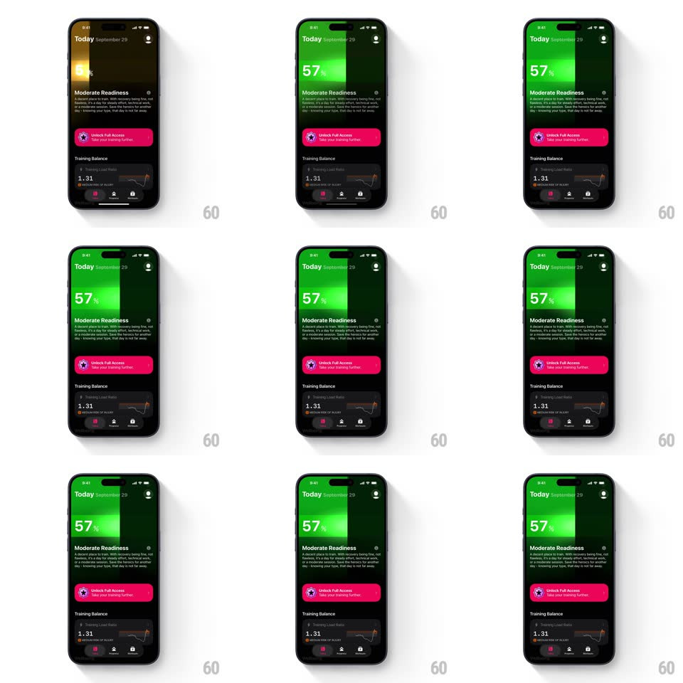

Media
Frame-by-frame

Rebuild this animation 1:1: The Outsiders' readiness bar reveal - a green progress fill sweeps down the top card behind the "57%" score while a bright light beam sweeps across it, landing on "Moderate Readiness".

Rebuild this animation 1:1: The Outsiders' readiness bar reveal - a green progress fill sweeps down the top card behind the "57%" score while a bright light beam sweeps across it, landing on "Moderate Readiness".
## Integration
Integration: stack-agnostic spec - springs given as stiffness/damping, timed motions as duration + curve; map every value to your framework and animation library of choice.
## Scene
Dark Today screen ("Today September 29"): a large top card that fills with green gradient behind a huge "57%" score, "Moderate Readiness" section with body copy and info icon, a pink "Unlock Full Access" button, a Training Balance row ("1.31" with sparkline), and the bottom tab bar.
## Motion spec
Pattern: beam-sweep score fill, ~1.1s.
- Fill: the green gradient washes into the top card top-to-bottom (700ms, ease-out), dark lime to bright green, masking behind the score text.
- Beam: a white light streak sweeps horizontally across the fill once (400ms, ease-in-out), skewed 12deg, additive blend, starting +150ms after the fill begins.
- Score: "57%" counts up from 0 in sync with the fill (same 700ms).
- Below: "Moderate Readiness", the button, and Training Balance rise in with a 12px fade (300ms, 60ms stagger) once the beam passes.
- Idle: the green fill pulses brightness +-6% on a 2.4s cycle.
## Calibration
- The score belongs to the card - it never moves during the sweep.
- The fill stops exactly at the card bounds; content below is unaffected.
## Reduced motion
The fill fades in (400ms) with the final score shown; no beam, no pulse.
## Don't miss
- The beam is one pass, not a loop - only the subtle brightness pulse continues after.
- The pink button stays fully saturated; it is not dimmed by the card animation.